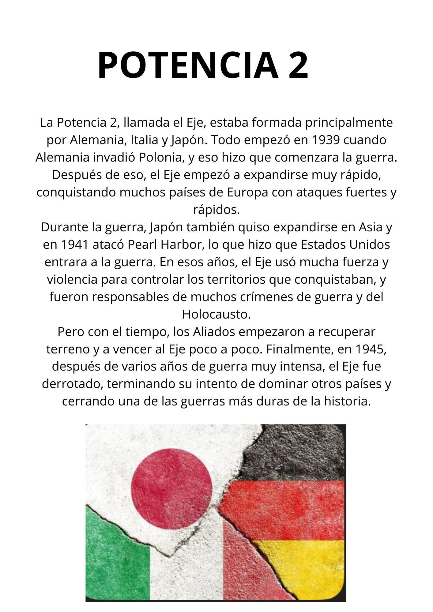
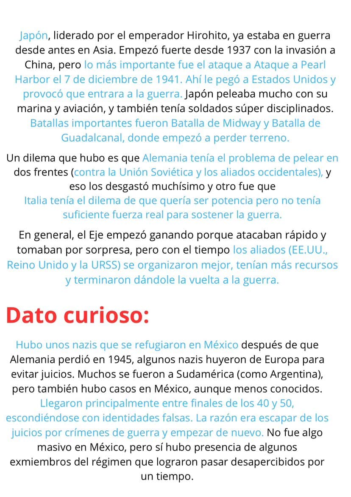
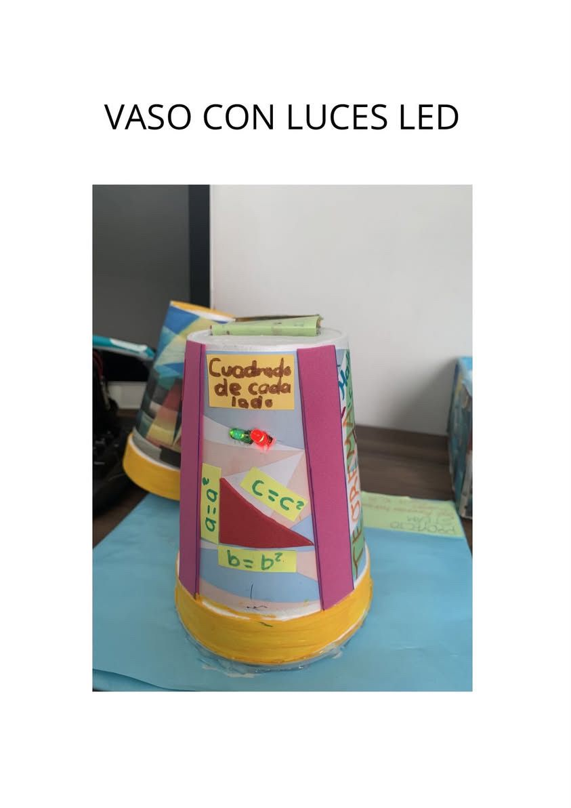
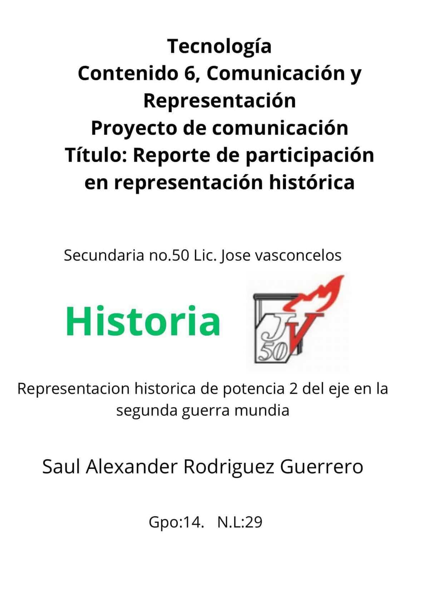
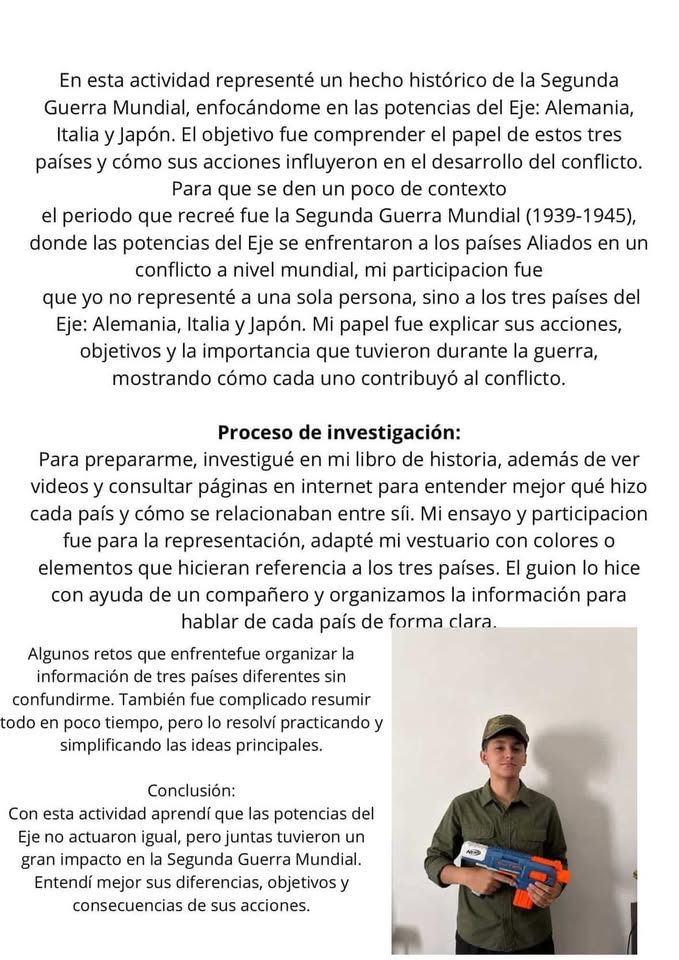

Edad de Piedra
Herramientas de piedra y fuego.
Explora la prehistoria y las primeras civilizaciones fluviales.
Herramientas de piedra y fuego.
Uso de cobre, bronce e hierro.
Escritura cuneiforme.
Pirámides y jeroglíficos.
Urbanismo y drenaje organizado.
Administración centralizada y agricultura.
Guadalupe Victoria fue un héroe de la Independencia de México y el primer presidente del país. Nació en 1786 en Durango. Su nombre real era José Miguel Ramón Adaucto Fernández, pero lo cambió a Guadalupe Victoria como símbolo de lucha y victoria.
Participó en la Guerra de Independencia desde 1810 y luchó junto a José María Morelos. Fue un militar valiente y nunca se rindió, aun cuando el movimiento estaba en peligro.
Después de que México logró su Independencia, en 1824 fue elegido primer presidente de México. Durante su gobierno defendió la libertad del país, expulsó a los últimos españoles del territorio mexicano y ayudó a organizar la nueva república.
Guadalupe Victoria es recordado como un hombre honesto y como uno de los personajes más importantes de la historia de México.


Panel de Tecnología. Evidencias próximamente.



Panel de Química. Evidencias próximamente.
Panel de Matemáticas. Evidencias próximamente.